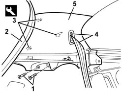
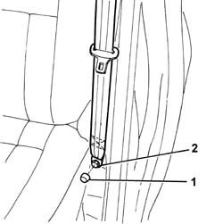
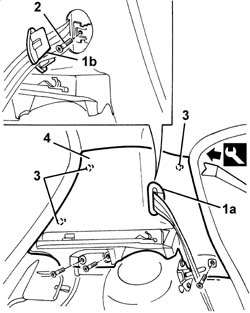

7040H42 rear pillar trim - r r
- Path
- Procedures > 70 FITTINGS > 7040 BODYSHELL INTERIOR TRIMS AND FITTINGS > 7040H roof panel lining > 7040H42 rear pillar trim - r r
- Kind
- repair procedure (removal / refitting; the operation number is the code)
- Applies to
- all engines; all production periods
- Interactive page
- https://sloeber94.github.io/elrnDB-a147/en/#/3025827
Applies to: all engines; all production periods; only with equipment: 3 porte
 Removing
Removing
 Refitting
RefittingRemove the rear parcel shelf.
7040L40 front compartment scuff strip - r r
7050A22 rear seat cushion - r+r
7040G30 boot light bulb holder - r r (right trim only)
1. Unscrew the bolts
2. Remove the tailgate seal near the pillar trim.
3. Remove the pillar trim inner retainers using the special tool.
 | Name | Country |
|---|---|---|
3 | Scraper blade | 1.823.015.000 |
4. Remove the seat belt run finishing piece and reel in the whole belt.
5. Recover the pillar trim.

Applies to: all engines; all production periods; only with equipment: 3 porte
Refitting
RemovingCheck that the pillar trim is not damaged.
Insert the seat belt in the trim run and fit the finishing piece.
Fit the pillar trim on the internal retainers.
Fit the tailgate seal near the pillar trim.
Tighten the screws.
7040G30 boot light bulb holder - r r (right trim only)
7050A22 rear seat cushion - r+r
7040L40 front compartment scuff strip - r r
Refit the parcel shelf.
Applies to: all engines; all production periods; only with equipment: 5 porte
Removing
RefittingRemove the rear parcel shelf.
7040G30 boot light bulb holder - r r (Right trim only)
1. Remove the bolt cover.
2. Undo the bolt securing the end of the rear seat belt.

Applies to: all engines; all production periods; only with equipment: 5 porte
1. Release the trim (1a) for the seat belt opening, then remove it passing the belt through the opening (1b).
2. Unscrew the trim retaining bolts.
3. Remove the pillar trim inner retainers using the special tool.
| Name | Country |
|---|---|---|
3 | Scraper blade | 1.823.015.000 |
4. Recover the pillar trim.

Applies to: all engines; all production periods; only with equipment: 5 porte
Refitting
RemovingCheck that the pillar trim is not damaged.
Fit the pillar trim on the internal retainers.
Tighten the trim retaining bolts.
Fit the seat belt in the opening and fit the trim.
Positioni the end of the rear seat belt and tighten the bolt.
 | Fastening | Component | Ø | Value (daNm) |
|---|---|---|---|---|
- | Nut | FRONT SEAT BELT IDLER | M7/16" | 4.0 |
Fit the bolt cover.
7040G30 boot light bulb holder - r r (Right trim only)
Refit the parcel shelf.
Topics linked from this page (4)
- 7040G30 boot light bulb holder - r r
- 7040H50 rear panel - r r
- 7040L40 front compartment scuff strip - r r
- 7050A22 rear seat cushion - r+r
Topics that link to this page (19)
- S60 REAR CREAKING
- T25 WIND NOISE FROM THE REAR AREA
- 3340A34 rpm sensor (one) of one l/h or r/h rear wheel - r+r
- 3340A35 left rear wheel rpm sensor - r r
- 3340A37 right rear wheel rpm sensor - r r
- 5505C28 intergrated engine bay and abs system wiring - r r
- 5505C41 cabin wiring - r r
- 5580C50 (HEAD- BAG MODULE ) (one), left or right - R.R.
- 7015A14 tailgate - adjust centring and profile - includes hinge and compartment seal adaptation
- 7015A24 tailgate hinges - repair or replace with tailgate removed
- 7030B12 sliding roof (assembly) - r+r
- 7030B40 drainage channel - r r
- 7030B50 sun roof guide , one , lh or rh - r r
- 7035C52 (One), side WINDOW left or right - R.R.
- 7035C54 side window one lh or rh r r includes cleaning of housing
- 7040B06 side trim (one) lh or rh, load compartment/load platform - r r
- 7040H10 roof panel lining - r r
- 7040H16 roof panel lining - r r
- 7065B10 l/h or r/h rear safety belt (one) - r+r